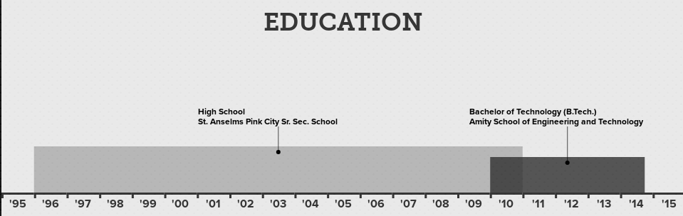

"..in a quest for the answer to our existence, I'd rather be an inter-galactic hitchhiker."
[slow claps from the audience] arcolife, While receiving Nobel Prize for BS in 2050
What do I do?
Primary expertise: Software Development & Performance engineering.
Secondary skills: Web Development, Data Analysis & Visualization, & Developer Operations Engineering
Traceback:
About:
Archit Sharma is a Performance Engineer (R&D) as well as a Software Developer who works at Red Hat and is leading a team that covers scalability of Cloudforms (ManageIQ) with Openshift/Openstack/vSphere, infrastructure automation/planning, knowledge-base driven product configuration recommendations, predictive modeling/analysis over performance data. All in all, he loves to derive insights from data generated by monitoring pipelines [Telemetry, Logs, Configs].
He has contributions to various open source projects, including Grafana, sos-report, scikit-learn (trying!) and has developed a couple of his own, like Sarjitsu (for analyzing SAR data) and Perf Script Postprocessor (for KVM BlockIO events' latency analysis).
His current contributions to github/redhat-performance/cfme-performance include workloads, middlewares and ansible scripts for infrastructure orchestration around ManageIQ. He has also contributed to Red Hat's in-house projects like Pbench, satellite-performance, SA tools, Multi-VM/Client MariaDB benchmarking with sysbench for different Async I/O modes, and so on.. (github/redhat-performance and github/distributed-system-analysis).
Archit has presented/participated at various conferences like DevConf'16 (Czech Republic), Red Hat Summit'15 (Boston), PyCon and KDD CoDS - ACM. Until recently, he was also a hackathon junkie and has attended Docker Global Hackathon [Bangalore, state winner x 2], CERN Webfest [first in Data Visualization], DoraHacks [China - remote, runner up] and Devsprint [India, PyCon'15]. He was also a summer student at CERN OpenLab (Geneva) and has co-organized several Python, Linux, DevOps and Docker local meetups.
| # | Organization | Projects / Efforts |
|---|---|---|
| 1 | Red Hat |
Distributed System Analysis:
|
| 2 | Grafana | Grafana addons:
|
| 3 | Sosreport | Collectd sos plugin |
| 4 | Ansible | Bug reports |
| 5 | Scikit-learn | Docstrings |
| 6 | Python wikipedia wrapper | Packaging fixes |
| 7 | Fedora Project | Mininet's packaging |
Batch: 2010-14
Bachelors, Computer Science & Engineering, Amity University, India.
While in college, I have mostly coordinated events & activities for Artificial Intelligence Club (AI club) and Linux Club (ALiAS).
Click here to view in full size.
Courtesy: Visualize.me
Let's meet up!
| # | Type | Link |
|---|---|---|
| 1 | Converse | |
| 2 | Connect | |
| 3 | Github | Get crackin' |
| 4 | Socialize | |
| 5 | Work Blog | Research |
| 6 | Personal Blog | Read |
| # | Type | Link |
|---|---|---|
| 1 | Mobile | [INDIA] +91 99 86 374931 |
| 2 | archit [DOT] py [AT] gmail [DOT] com | |
| 3 | Freenode IRC | @arcolife / @archit |
| 4 | Online CV | Indulge |
{kind=link}
{kind=link}